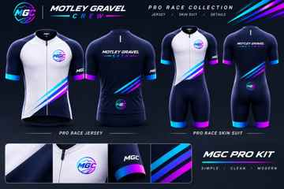

ONE CREW. EVERY RIDE.
WHAT'S HAPPENING AT MGC
The home for Motley Gravel Crew announcements, upcoming rides, kit development and updates from our cycling community. Check back here for the latest from the crew.
UPCOMING RIDES
Ride announcements, dates, meeting points and ride information will be posted here as they are confirmed.
No new MGC group ride announcement at present. Keep an eye on this page and the MGC Strava Club for updates.
FOLLOW MGC ON STRAVA ↗MGC KIT DEVELOPMENT
THE JERSEY PROJECT
New MGC kit is in development.
We’ll share prototype jersey designs here as they become available. This will be the place to look through the concepts and send feedback before a final design is selected.
Prototype design images will be added here.
SEND JERSEY FEEDBACK ↗
PRO RACE COLLECTION · PROTOTYPE DESIGN
FROM THE CREW
GENERAL ANNOUNCEMENTS
What's new at Motley Gravel Crew?
This space is reserved for general MGC announcements, news and updates. New information will appear here as it is ready to share.
HAVE YOUR SAY
FEEDBACK, IDEAS & ENQUIRIES
Have a suggestion for the website, feedback about Motley Gravel Crew, a question or a general enquiry? We’d like to hear from you.